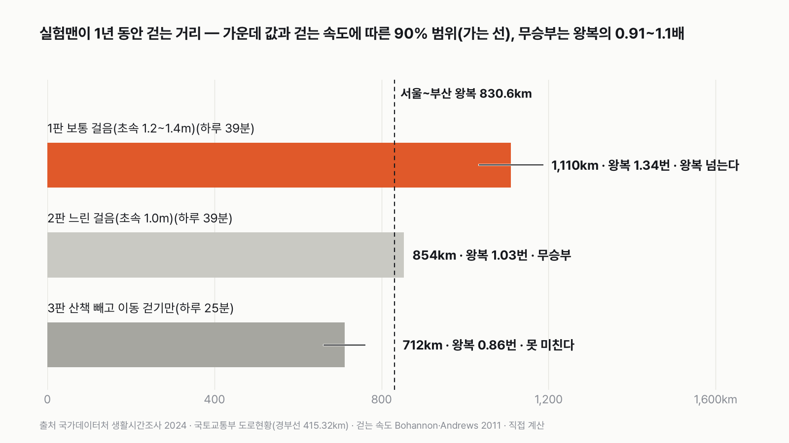
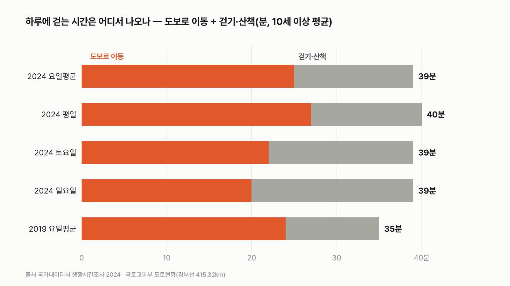
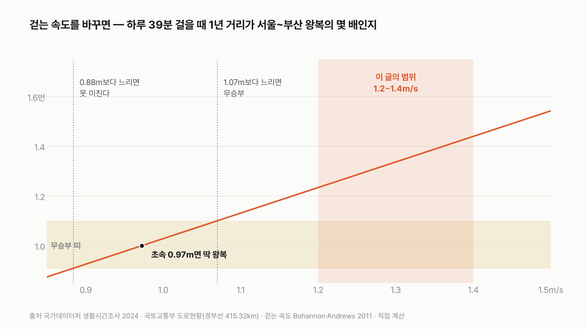
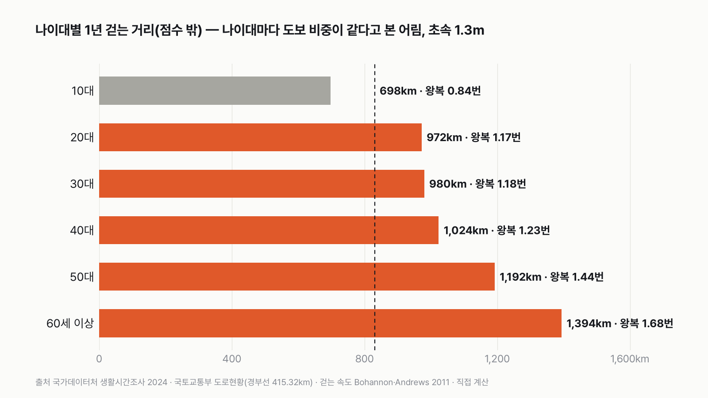

평균 한국인이 1년 동안 걷는 거리로 서울~부산을 왕복할 수 있을까
투표하기 전에, 실험맨이 하루에 몇 분 걷는지 먼저 짐작해 보세요.
독자 투표
- 실험맨은 평균 한국인이에요. 출근길, 장 보러 가는 길, 저녁 산책까지 1년 동안 걸은 길을 한 줄로 이으면 얼마나 될까요?
- 서울~부산 경부고속도로는 415km, 왕복이면 830km예요.
- 나라에서 하루 시간을 10분 단위로 적게 한 조사로 계산했어요. 투표하면 결과가 바로 아래에 열려요.
조건과 규칙
- 실험맨은 10세 이상 한국인 평균이에요. 2024년 생활시간조사에서 하루 동안 걸어서 이동한 시간과 걷기·산책을 한 시간을 써요.
- 거리는 걷는 시간에 걸음 속도를 곱해 구해요. 걸음 수를 세는 공식 통계가 없어서예요.
- 서울~부산은 국토교통부 도로현황의 경부고속도로 길이예요.
- 보통 걸음, 느린 걸음, 산책을 뺀 이동 걸음만, 세 판으로 겨뤄요. 1년 거리가 왕복과 1.1배 안쪽으로 차이 나면 무승부예요.
결과 요약
3판 1승 1무 1패 → 최종 무승부
- 실험맨은 하루 39분을 걸어요. 보통 걸음(초속 1.2~1.4m)이면 1년 약 1,110km로, 서울~부산 왕복(830.6km)의 1.34배예요.
- 느리게 걸으면(초속 1.0m) 왕복의 1.03배로 무승부, 산책을 빼고 이동할 때 걸은 25분만 세면 0.86배로 못 미쳐요. 출퇴근 걸음과 산책을 합쳐야 왕복을 넘어요.
- 판정을 가르는 가정은 걷는 속도예요. 초속 1.07m보다 느리면 무승부, 0.88m보다 느리면 '못 미친다'가 돼요. 불리한 가정을 겹치면(초속 1.15m에 신호 대기 10%) 1.06배로 무승부예요.
그래서? 실험맨이 보통 걸음으로 출퇴근 걸음과 산책을 다 합치면 1년에 서울~부산을 한 번 왕복하고 남지만, 걸음이 느리거나 산책을 빼면 왕복에 못 미쳐요.
독자 예상 vs 데이터 결과
평균 한국인이 1년 동안 걷는 거리로 서울~부산을 왕복할 수 있을까?
데이터 결과: 무승부. 보통 걸음이면 1.34배로 왕복을 넘지만, 느린 걸음이면 1.03배(무승부), 산책을 빼면 0.86배예요. 1승 1무 1패, 무승부예요.


숫자 두 개로 줄이면 이래요. 실험맨은 하루에 3km 남짓 걸어요. 서울~부산 왕복에는 보통 걸음으로 하루 29분이면 충분한데, 그 가운데 산책을 빼면 25분이라 모자라요.
| 판 | 하루 걷는 시간 | 걷는 속도 | 1년 거리(가운데 값) | 왕복 몇 번 | 판정 |
|---|---|---|---|---|---|
| 1판 보통 걸음 | 39분 | 초속 1.2~1.4m | 1,110km | 1.34번 | 왕복 넘는다 |
| 2판 느린 걸음 | 39분 | 초속 1.0m | 854km | 1.03번 | 무승부 |
| 3판 산책 빼고 이동 걷기만 | 25분 | 초속 1.2~1.4m | 712km | 0.86번 | 못 미친다 |
| 최종 | 3판 1승 1무 1패 → 무승부 |
판정 규칙은 계산 전에 정했어요. 1년 거리가 왕복의 1.1배를 넘으면 '왕복 넘는다', 1.1분의 1(0.91배)보다 작으면 '못 미친다', 그 사이는 무승부예요. ### 1판 보통 걸음: 왕복 넘는다(1.34번) 생활시간조사는 사람들이 하루를 10분 단위로 적은 일기예요. 2024년 실험맨은 하루 평균 25분을 걸어서 이동했고, 14분을 밖에서 걷기·산책으로 보냈어요. 둘은 겹치지 않아요. 걷기·산책 가운데 '도보 이동'으로 적힌 시간은 0분이었어요. 합치면 하루 39분이에요.
여기에 건강한 어른의 보통 걸음 속도를 곱했어요. 2만 3천 명을 모은 연구에서 나이와 성별에 따라 초속 0.94~1.43m였어요. 이 글은 초속 1.2~1.4m를 고르게 뽑아 2만 번 계산했어요. 가운데 값은 1년 1,110km, 왕복의 1.34배예요. 범위 아래 끝인 초속 1.2m로 잡아도 1.23배라서 무승부 선(1.1배) 위에 있어요.


2판 느린 걸음: 무승부(1.03번)
걷는 시간이 가장 긴 건 60세 이상이에요. 나이 들수록 걸음은 느려지니, 실험맨의 걸음을 초속 1.0m로 늦춰 봤어요. 그러면 1년 854km, 왕복의 1.03배예요. 왕복을 겨우 넘지만 1.1배 안쪽이라 무승부예요.
3판 산책 빼고 이동 걷기만: 못 미친다(0.86번)
출근, 퇴근, 장 보러 가는 길처럼 어딘가 가려고 걸은 시간만 세면 하루 25분이에요. 보통 걸음으로 1년 712km, 왕복의 0.86배라 '못 미친다'예요. 저는 출퇴근 걸음만으로 왕복을 넘을 줄 알았는데, 왕복을 넘게 만든 건 하루 14분의 산책이었어요.


가정을 바꾸면
판정을 흔드는 건 걷는 속도예요. 하루 39분 걸을 때 딱 왕복이 되는 속도는 초속 0.97m예요. 1.1배 규칙으로 보면 초속 1.07m보다 느리면 무승부, 0.88m보다 느려야 '못 미친다'가 돼요. 이 글의 속도 범위(초속 1.2~1.4m)는 그 연구의 양 끝(0.94~1.43m) 안쪽에서 골랐어요. 걷는 시간이 긴 60세 이상의 걸음이 느린 편이라, 범위를 1.3m 가운데로 잡고 아래쪽을 1.2m까지 넓혔어요.
생활시간조사는 10분 단위 일기라, 집 안에서 부엌과 거실을 오가거나 회사 안에서 회의실로 가는 짧은 걸음은 잡히지 않아요. 반대로 신호등 앞에서 멈춘 시간은 '걸어서 이동한 시간'에 섞일 수 있어요. 그래서 이 글의 거리는 양쪽으로 어긋날 수 있어요. 멈춘 시간이 걷는 시간의 18%를 넘으면 1판도 무승부로, 32%를 넘으면 '못 미친다'로 내려와요.
참고로 스마트폰 앱 사용자 71만 명의 걸음을 모은 연구에서 세계 평균은 하루 4,961걸음이었어요. 한국 값은 이 글에서 확인하지 못했어요. 이 숫자에 보폭 0.6~0.75m를 곱하면 1년에 왕복의 1.31~1.64배예요. 앱 기록은 휴대폰을 들고 다닐 때만 세고 공식 통계가 아니라서 판정에는 쓰지 않았어요.
하루 몇 분이면 왕복일까
초속 1.3m로 걸으면 하루 29분이면 1년에 서울~부산 왕복이 되고, 무승부를 넘어 확실히 이기려면 하루 32분이에요. 실험맨은 39분을 걸어서 넉넉하지만, 산책을 빼면 25분이라 모자라요. 2019년에는 하루 35분이라 왕복의 1.20배였어요. 5년 사이 하루 4분이 늘었고, 늘어난 건 걷기·산책(11분 → 14분)이 대부분이에요.
주말 이야기도 재밌어요. 토요일과 일요일도 하루 39분으로 평일(40분)과 거의 같아요. 걸어서 이동하는 시간은 일요일 20분으로 줄지만, 걷기·산책이 19분으로 늘어요. 평일엔 일이 실험맨을 걷게 하고, 주말엔 산책이 그 자리를 채워요.


점수 밖: 누가 더 걷나
여자는 왕복의 1.44배, 남자는 1.27배를 걸어요. 나이대별로는 50대가 1.44배, 60세 이상이 1.68배로 가장 많이 걷고, 10대가 0.84배로 가장 적어요. 다만 나이대별 숫자는 '걸어서 이동한 시간'을 나이대마다 따로 알 수 없어서, 모든 나이대의 도보 비중이 같다고 본 어림이에요. 60세 이상은 걸음도 느린 편이라 실제 거리는 이보다 짧을 수 있어요. 그래서 판정에는 넣지 않았어요.
이 규칙과 가정이면 판정은 1승 1무 1패, 무승부예요. 실험맨이 보통 걸음으로 출퇴근 걸음과 산책을 합치면 왕복을 넘고, 걸음이 느리면 겨우 비기고, 산책을 빼면 못 미쳐요.
이 숫자는 어디서 왔나요
출처
기준일 생활시간조사는 2024년 조사(2026년 11월 9일 받음), 경부선 길이는 2025년 도로현황이에요. 조건은 2026년 11월 9일, 계산하기 전에 정했어요.
국가데이터처(옛 통계청)
- 생활시간조사 장소 또는 이동수단별 평균시간KOSIS DT_2019_109_1TM3076X
도보 이동·걷기·산책 시간(2019·2024, 요일·성별)
- 생활시간조사 연령대별 평균시간KOSIS DT_1TS202004원본 보기
나이대별 이동·걷기·산책 시간(점수 밖)
국토교통부
- 도로현황 고속국도 현황KOSIS DT_MLTM_5676
경부선 연장 415.32km
Bohannon·Andrews 2011,Physiotherapy
- 보통 걸음 속도doi:10.1016/j.physio.2010.12.004원본 보기
성·나이대별 보통 걸음 초속 0.94~1.43m
Althoff 외 2017,Nature
- 스마트폰 걸음 수doi:10.1038/nature23018원본 보기
앱 사용자 세계 평균 하루 4,961걸음(참고만)
어떻게 셌나요
- 걷는 시간: 국가데이터처(옛 통계청) 생활시간조사 2024의 '장소 또는 이동수단별 평균시간' 표를 썼어요. 모든 행동 가운데 이동수단이 '도보'인 시간(25분)과, 행동이 '걷기·산책'이면서 장소가 도보가 아닌 시간(14분)을 더했어요. 10세 이상 전체 평균이라, 하루에 한 번도 안 걸은 사람도 0분으로 들어가 있어요.
- 걷는 속도: 41개 연구, 2만 3,111명을 모은 연구(Bohannon·Andrews 2011)에서 건강한 어른의 보통 걸음은 초속 0.94~1.43m였어요. 1판·3판은 초속 1.2~1.4m를 고르게 2만 번 뽑았고(가정), 2판은 초속 1.0m로 고정했어요.
- 1년 거리: 하루 걷는 분 × 60 × 초속 × 365 ÷ 1,000(km)이에요.
- 서울~부산: 국토교통부 도로현황의 고속국도 제1호 경부선(부산 금정구~서울 서초구) 연장 415.32km(2025)예요. 왕복은 830.64km예요.
- 3판 이동 걷기만: 걷기·산책을 빼고 이동수단이 '도보'인 시간(25분)만 셌어요.
- 나이대(점수 밖): 나이대별 '이동' 시간에 전국의 도보 비중(이동 시간 가운데 도보 27%)을 곱하고, 나이대별 '걷기·산책'을 더한 어림이에요.
| 숫자 | 잰 것 / 가정 | 값 |
|---|---|---|
| 하루 도보 이동·걷기·산책 시간 | 잰 것(생활시간조사, 10분 단위 일기) | 39분(2024) |
| 서울~부산 거리 | 잰 것(국토교통부) | 415.32km |
| 걷는 속도 | 가정(연구 범위 안에서 고름) | 초속 1.2~1.4m |
| 집·회사 안 걸음 | 빠짐(거리를 적게 잡는 쪽) | 앱 참고값(세계 평균)으로 왕복 1.31~1.64배 |
| 신호 대기 등 멈춘 시간 | 섞임(거리를 많이 잡는 쪽) | 18% 넘으면 무승부, 32% 넘으면 못 미친다 |
| 나이대별 도보 비중 | 가정(전국 비중을 그대로 씀) | 27% |
한계 5가지
이 데이터로 말할 수 없는 것
- 하루 걸음 수를 세는 공식 통계가 없어요. KOSIS의 '걷기 실천율'은 일주일에 정해진 만큼 걷는 사람의 비율이라 거리로 바꿀 수 없어요.
- 생활시간조사는 10분 단위로 적어서 짧은 걸음이 빠지고, 신호를 기다리는 시간은 섞여요. 앞은 거리를 줄이고 뒤는 늘려요.
- 걷는 속도는 외국을 포함한 여러 연구를 모은 값이에요. 한국인만 잰 값은 아니에요.
- 앱 걸음 수는 한국 값을 확인하지 못해서 세계 평균만 참고로 썼어요. 판정에는 쓰지 않았어요.
- 하루 시간은 1분 단위로 반올림된 값이라, 하루 1분이 1년에 약 28km(왕복의 0.03배)를 움직여요.
다음 대결
대결 다 보기판다 vs 실험맨
판다 vs 실험맨, 다섯 판 승부로 하루에 '더 많이 먹는' 쪽은?
A판다vsB실험맨
투표하러 가기
대결실험맨투표했어요결과: 산다배달·외식비 vs 스마트폰
실험맨이 1년 동안 사 먹는 밥값(배달 포함)으로 최신 스마트폰을 살 수 있을까?
A산다vsB못 산다
투표하러 가기
대결실험맨투표했어요65세 이상 남성 승20대 여성 vs 65세 이상 남성
20대 여성 실험맨 vs 65세 이상 남성 실험맨, 네 판 승부로 하루 운동을 더 많이 하는 쪽은?
A20대 여성vsB65세 이상 남성
투표하러 가기
대결투표했어요짜장면 승짜장면 vs 치킨
짜장면 vs 치킨, 다섯 판 승부로 값이 더 많이 오른 국민 음식은?
A짜장면vsB치킨
투표하러 가기
대결실험맨투표했어요출퇴근 승출퇴근 vs 연차
실험맨이 1년 동안 출퇴근에 쓰는 시간과 연차 휴가로 쉬는 시간, 세 판 승부로 더 긴 쪽은?
A출퇴근vsB연차 휴가
투표하러 가기
대결투표했어요경복궁 승경복궁 vs 에버랜드
경복궁 vs 에버랜드, 다섯 판 승부로 1년에 사람이 더 많이 찾는 곳은?
A경복궁vsB에버랜드
투표하러 가기
대결투표했어요결과: 세계기록 사람마라톤 세계기록 vs 서울 버스
마라톤 세계기록 속도로 뛰는 사람 vs 서울 시내버스, 세 판 승부로 더 빠른 쪽은?
A세계기록 사람vsB서울 버스
투표하러 가기
대결실험맨투표했어요무승부실험맨 vs 수영장
실험맨 혼자 1년 쓴 수돗물로 25m 수영장 레인 한 줄을 채울 수 있을까?
A채운다vsB못 채운다
투표하러 가기
새 글 나오면 받아 보기
피드 리더 앱에 이 사이트 주소를 한 번 넣어 두면, 새 글이 올라올 때 앱에 떠요. 가입이나 메일 주소는 필요 없어요.
받는 법 보기
- 피드 리더 앱을 하나 골라요. 새 글을 모아 보여 주는 앱이에요. 예를 들면 Feedly나 Inoreader가 있어요. 둘 다 무료고 웹·휴대폰에서 써요.
- 앱에서 '구독 추가'(+)를 누르고 아래 주소를 붙여 넣어요.
- 끝이에요. 새 글이 올라오면 앱 목록에 떠요.
https://protofu.github.io/opendata-insight/feed.xmlFeedly를 쓴다면 여기를 눌러 바로 추가할 수도 있어요.